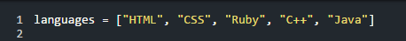

Arrays and Hashes
No, not that kind of hash
06/29/2015
Well hello again! We’re back talking about the wonderful land of Ruby and some of it’s most important data structures, Arrays and Hashes. First of all what is a data structure? Well it’s simply a way for a program to store data. A simple variable is a data structure along with our dear friends arrays and hashes. So what do we do with all of this data? Well we tell the computer to do things with it! Variables, arrays, and hashes allow us to access, change, and output data from the wild world of binary.
So what’s the difference between our two main friends arrays and hashes? Let’s start with arrays. An array can be made in a couple of different ways but we’ll be working with standard notation for the time being.
As you can see this array looks very similar to any other variable except for those brackets. The brackets allow you to store data, separated by commas, into the one array. This data can be anything. Integers, strings, booleans (true or false), and even more arrays! The literal notation is pretty similar but there is a lot more typing.
With the literal notation you must define an empty array then load each value individually by using the array index. Indexes start at the number zero so to access the value of “Ruby” in our languages array we would have to say languages[2] even though it is the third value in our array. Literal notation is great for when you don’t know the data going into the array at the time of programming.
Now on to our more unique colleague hashes! A hash is, at it’s core, exactly like an array. It stores multiple values into one neat little place. The major difference is that hashes define their own key-values.

There is a lot more to this than your basic array. Instead of automatic numerical indexes found in arrays we create our own indexes, generally a “string”, with a corresponding value. In the example above we see all of our superheroes as our key-values with their secret identity as the actual value stored in the key. To access that information we could say superheroes[“Black_Widow”] to get the value of “Natasha Romanoff”. A couple of things to note. Each standard hash must have a comma after each line except for the last value and it must use curly brackets or your code will not work. Of course there is another way of creating hashes and that is with the literal notation.
The literal notation array and literal notation hash are very similar except that you define the key-value in the brackets as well as what the key-value is going to store.
That’s about all for this week. We’ll be on break for the 4th of July holiday so see you in a couple of weeks!